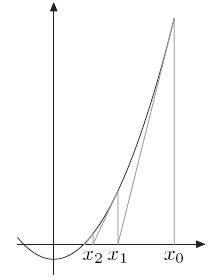

Método da Bissecção
Seja uma função contínua em [a,b] tal que f(a)*f(b) < 0, podemos aferir, então, que existe pelo menos um valor x dentro desse intervalo que satisfaça a condição de f(x) = 0. O método da bissecção visa estreitar esse intervalo de tal modo que a distância entre os valores do intervalo [a,b] fiquem tão proximos ao valor da raiz quando nos queiramos.

Algoritimo
- Escolha um valor de tolerância (ε < 0.00001)
- Encontre um intervalo [a0,b0], tal que f(a0)*f(b0)
- Se, a - b ≥ ε, repete o passo anterior até que a tolerância seja atingida.
Método de Newton-Raphson
O método de Newton-Raphson, consiste na aproximação da raiz da função f(x), por meio da reta tangente da função. Esta análise pode ser obtida a partir da verificação geométrica da função conforme a imagem:
Sabe-se que a equação da reta é dada por:
Temos que:
yn = f(xn) = 0;
m é a inclinação da reta e é dada por: m = df(x0)/dx;
logo, adicionando as considerações e reoganizando a equação temos:
Pode-se observar que a natureza desse método é iterativa, logo podemos iteragir esse método até uma margem de tolerância igual ao método acima comentado.
Método das Secantes
O método da Secante é um método derivado do método de Newton-Raphson, o qual substitui-se a função da inclinação da reta tangente , ou derivada da função, por uma aproximação numérica da mesma, assim como o método da bissecção são necessários dois pontos para se analisar a raiz desta função no intervalo, conforme a equação abaixo: